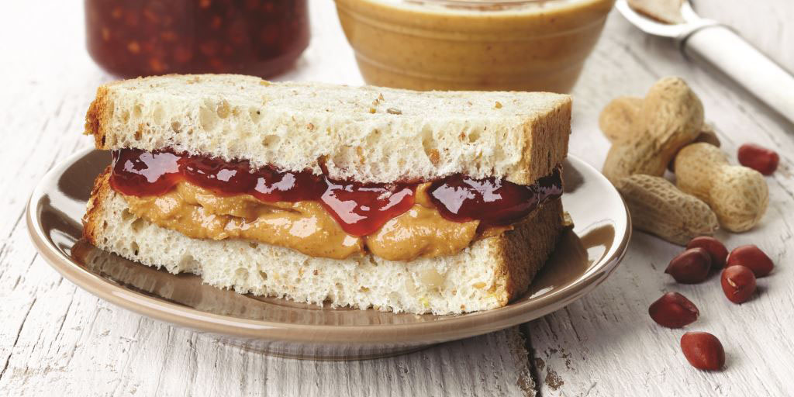

The Perfect Grilled PB&J

Description
This peanut butter and jelly sandwich is my favorite sandwich. It has the perfect balance of ingredients and looks great when made right.
Ingredients
- 2 slices of white bread
- 1 jar of grape jelly
- 1 jar of creamy peanut butter
- a butter knife
- a sharp knife
- a cutting board
Directions
Prep time: 5m | Cook: 8m | Ready in: 13m
- Heat griddle or skillet to 350 degrees F (175 degrees C).
- Spread butter on one side of each slice of bread.
- Spread peanut butter on unbuttered side of one slice of bread, and jelly on the other.
- Place one slice, buttered side down on the griddle.
- Top with other slice, so that peanut butter and jelly are in the middle.
- Cook for 4 minutes on each side, or until golden brown, and heated through.
Take a look at this delicious alternative!